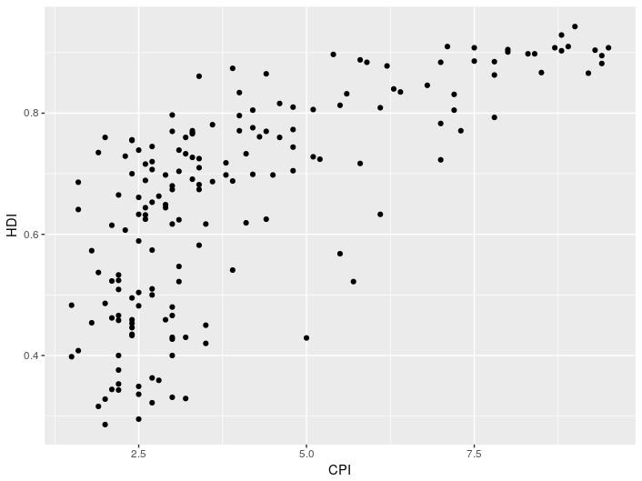
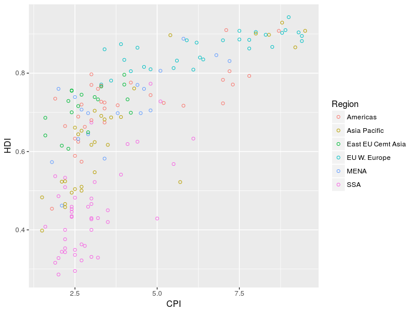
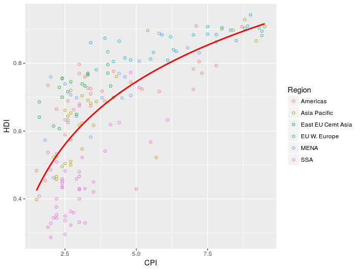
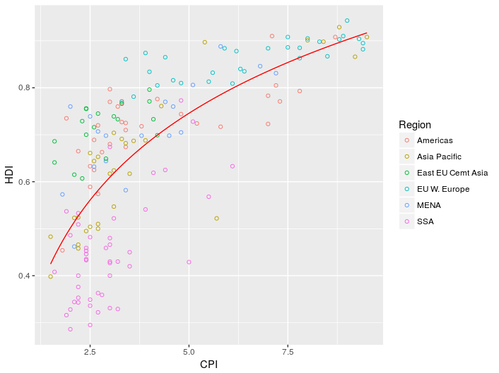

Advanced graphing with ggplot2
In this section we will recreate a graph from the Economist (shown below), providing a crash course in making beautiful figures with ggplot2.

This was originally used as a challenge in the Harvard tutorial available here. It is well worth checking out that tutorial to get a better understanding of the steps used here to build up the graph.
As we progress we will also introduce some new concepts in R which are useful beyond there relevance to making this graph.
Obtaining the data
We can load the data the graph is based on directly from the tutorial website using:
econ <- read.csv("https://dww100.github.io/nc3rs-r-tutorial/data/economist.csv")
The data is available here to download and read from the file system if you prefer.
Investigate the data using either the R Studio data viewer or using the command:
head(econ)
The two columns we are most interested in are CPI (Corruptions Perception Index) and HDI (Human Development Index).
Create a simple plot
To create a scatter plot of the data with CPI on the x-axis and HDI on the y-axis enter the folowing:
> ggplot(econ, aes(x = CPI, y = HDI)) +
geom_point()
As in the earlier example the ggplot command here creates the plot object and selects the CPI and HDI columns to be the x and y variables.
geom_point then adds the scatter plot layer.
Your plot should look something like the one below.

This looks pretty bland and no distinction has been made between the points representing data different regions of the world.
To brighten the graph up lets color the points based on Region and alter the dots to hollow points (as used in the Economist graph).
>ggplot(econ, aes(x = CPI, y = HDI)) +
geom_point(aes(color = Region), shape = 1)

Adding a trend line
In the Economist graph a line has been added to highlight the relationship between CPI and HDI to the viewer.
The geom used in ggplot2 to add this trend line is geom_smooth.
In order to add a trend line, we need to have a model linking changes in CPI to HDI.
The relationship here is a logarithmic one, mathematically the formula we want to use is HDI = log(CPI).
In R the = symbol is used for assignment and ~ is used instead.
Replot the graph with an added trend line using:
>ggplot(econ, aes(x = CPI, y = HDI)) +
geom_point(aes(color = Region), shape = 1) +
stat_smooth(method = "lm", formula = y ~ log(x), se = FALSE, color = "red")

Compared to the circles, the trend line appears a bit too thick.
Reduce this size using the size option:
>ggplot(econ, aes(x = CPI, y = HDI)) +
geom_point(aes(color = Region), shape = 1, stroke = 1, size = 2.5) +
stat_smooth(method = "lm", formula = y ~ log(x), se = FALSE, color = "red", size = 0.5)

In the next part of the tutorial we will add labels to the plot and make the theme resemble the original plot.